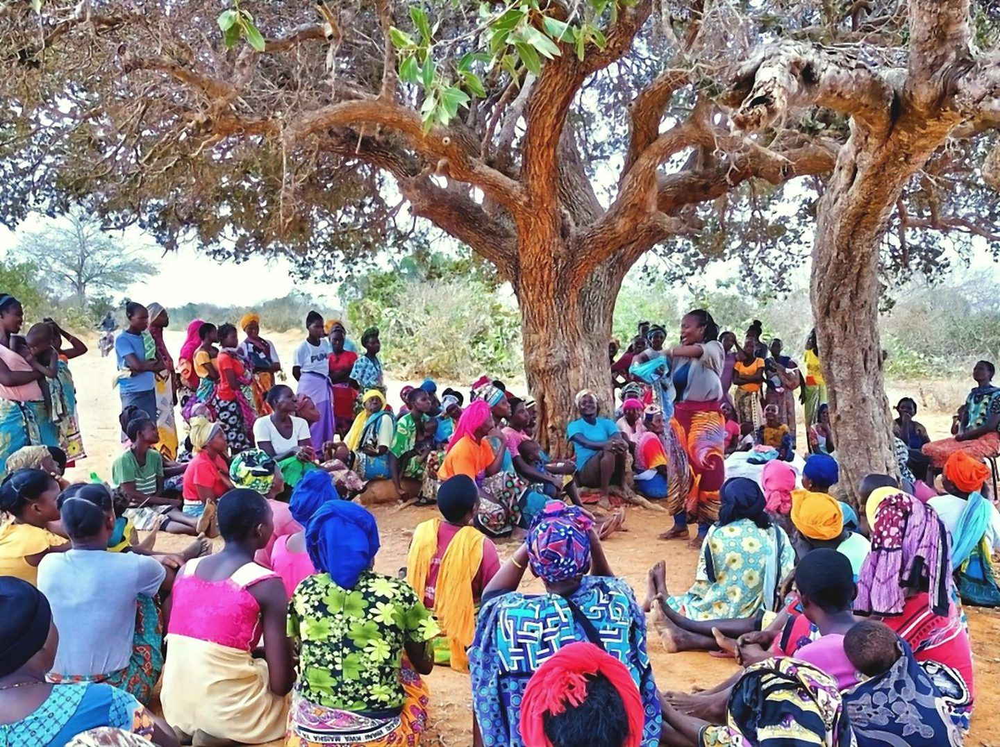

Restoring Kenya's drylands, feeding its children.
Growing in good company.
- Mercedes-Benz Foundation
- UNDP · Youth4Climate
- GAIN
- Ministry of Agriculture, Kitui
- Ministry of Education, Kitui
- AfriFORTIFIED
- Carbon90

Our goal is to ensure our communities are fed.
How?
- 01Land restoration
- 02Market linkage
- 03Value addition
What we have achieved together.
- 60haLand restored
- 500+Households supported
- 10+Schools reached
Six global goals, one harvest.
Tap a goal to see how our work contributes to it.
Zero Hunger
We develop nutritious food products, such as NutriPop, our sorghum-based instant porridge, to support better nutrition, particularly among children.
Gender Equality
We work with women smallholder farmers, supporting their participation in agriculture, access to markets and opportunities to improve their livelihoods. EcoRafiky is also a women-led organisation.
Decent Work and Economic Growth
We create livelihood and income opportunities for women farmers through agricultural production, produce aggregation, value addition and market connections.
Responsible Consumption and Production
We promote the use of locally grown crops and explore ways to transform agricultural produce into nutritious, value-added food products.
Climate Action
We support climate-resilient farming practices that help communities adapt to drought and other climate-related challenges.
Life on Land
We work to restore degraded land, improve soil health, encourage vegetation recovery and protect biodiversity through sustainable land management.
Every hectare restored feeds a family and a classroom.
Partner with us, fund restoration or bring NutriPop to a school near you.